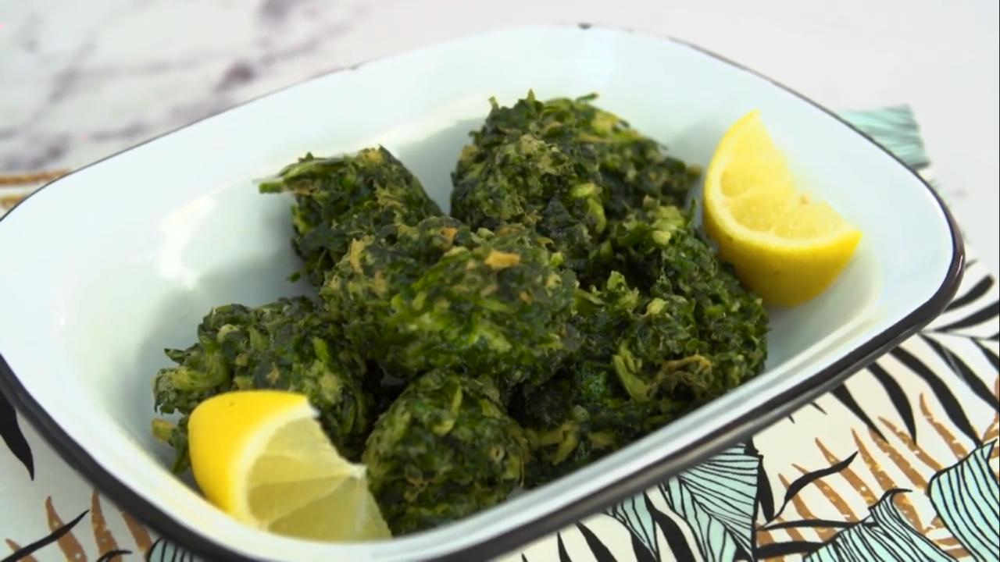

Buñuelos de acelga

Ingredientes
- Nuez Moscada A gusto<./li>
- Huevos 2 o 3 Unidades.
- Acelga 200 g.
- Sal y Pimienta A gusto.
- Polvo para hornear 1 cdita.
- Aceite neutro para freír Cantidad necesaria.
- Queso rallado 50 g.
- Harina 1 Taza.
Procedimiento
- Lave las hojas de acelga en varias aguas.
- Coloque en una cacerola profunda las hojas sin el tallo, con el agua del lavado, condimente con sal y tape la cacerola para que se cocine al vapor.
- Cuando esta tierna retire, deje enfriar y escurra.
- Pique la acelga y mezcle con la harina con el polvo de hornear, los huevos, queso rallado y condimente con sal, pimienta y nuez moscada.
- Fría los buñuelos en aceite caliente, escurra en papel absorbente y sirva.
- Con los tallos, hiérvalos en agua y sal, cuele y dispóngalos en una asadera .
- Funda 100 gs de manteca y procese con un diente de ajo y 4 filetes de anchoas rocíe las pencas y esparza por encima pan rallado con queso en partes iguales. (200 gs)
- Gratine al horno.